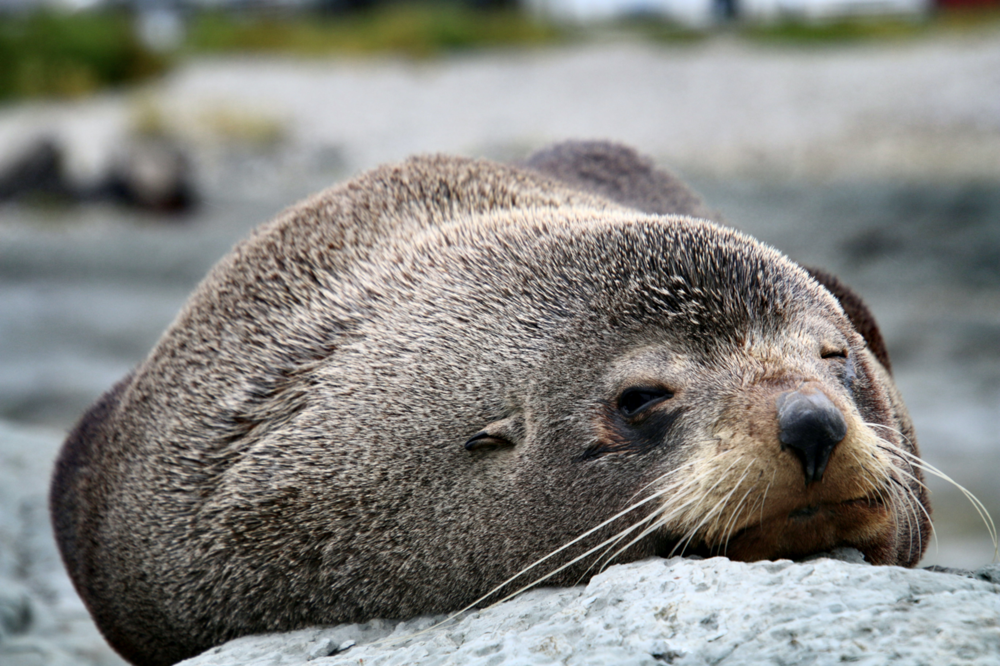
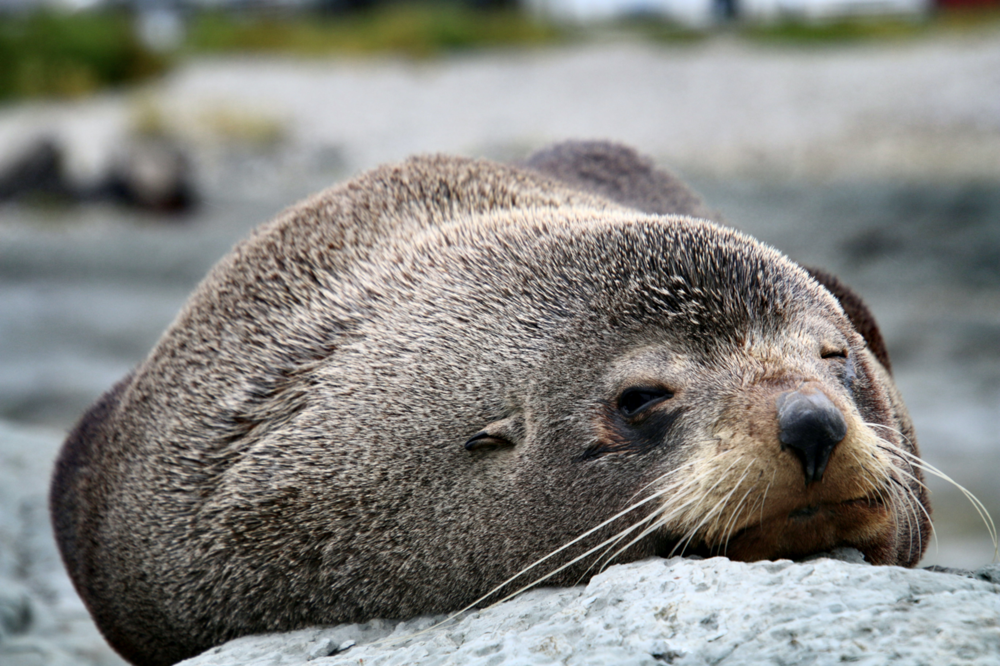

Explore the Enchanting Arctic Tundra
Embrace the chill and journey to the frozen wonders of the Arctic, where you'll encounter some of the world's most remarkable cold-weather inhabitants. Our Arctic area features the awe-inspiring polar bear, the cunning arctic fox, and the charming fur seal, each perfectly adapted to life in the icy tundra.
Witness these magnificent animals in action, as you learn about their unique adaptations, survival strategies, and the challenges they face in a rapidly changing environment. Take part in our interactive presentations, meet our dedicated team of Arctic experts, and gain a deeper appreciation for the incredible creatures that call the Arctic home.
Meet the Stars of Our Enchanting Arctic Tundra
Polar Bears

Introducing our majestic polar bear duo, Aurora and Frost. These awe-inspiring creatures are the largest land carnivores on Earth and are perfectly adapted to life in the harsh Arctic environment. Watch as Aurora and Frost demonstrate their incredible swimming and hunting skills in our expansive Arctic habitat. Learn about their unique adaptations, their critical role in the Arctic ecosystem, and the urgent conservation efforts in place to address the threats they face due to climate change and habitat loss.
First photo by Jason Hillier. Second photo by Peter Neumann.
Arctic Foxes
Meet our playful arctic fox pair, Snow and Ice. These charming, nimble creatures are known for their striking white winter coats and incredible adaptability in the frigid Arctic climate. Observe Snow and Ice as they display their keen hunting instincts, agility, and social behaviors in our Arctic area. Discover more about their remarkable adaptations, their complex family structure, and the ongoing conservation efforts aimed at protecting their natural habitats and populations.


First photo by Teresa. Second photo by Sridhar Chilimuri.
Fur Seals
Say hello to our delightful fur seal family, Splash, Wave, and their playful pups. These endearing marine mammals are known for their dense fur, impressive agility in water, and their ability to thrive in the icy Arctic waters. Watch as Splash, Wave, and their pups demonstrate their incredible swimming and diving abilities, while also showcasing their social interactions and vocalizations. Learn about their unique physiology, their importance in the Arctic food chain, and the conservation efforts in place to ensure the survival and protection of these captivating creatures.
 

First photo by Karen Lau. Second photo by Simon Infanger.